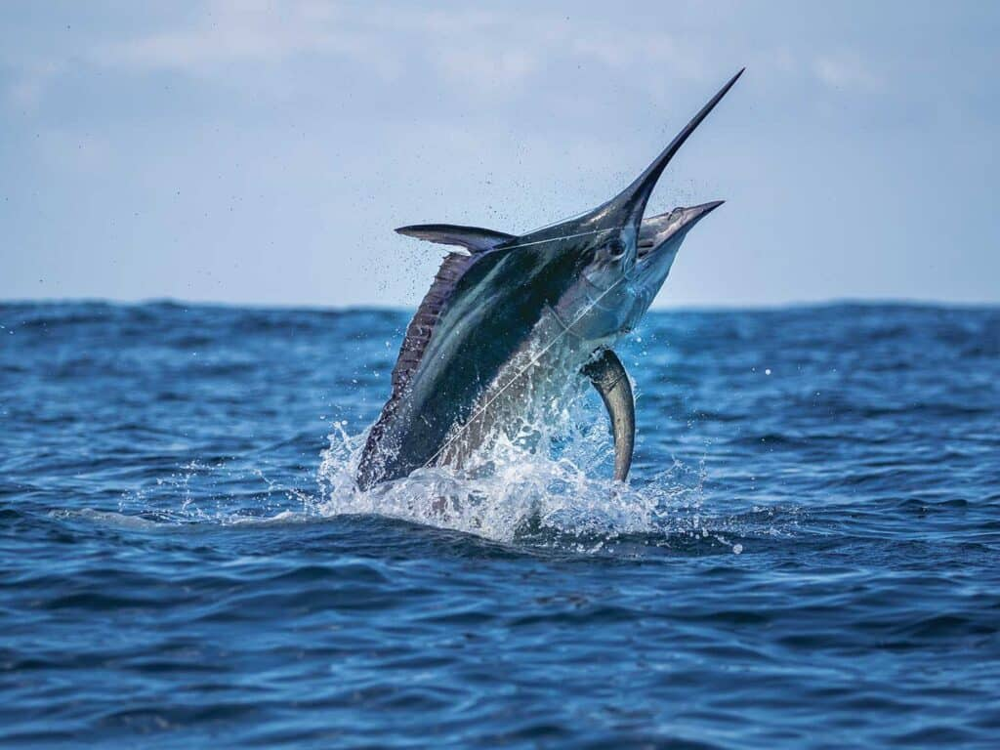
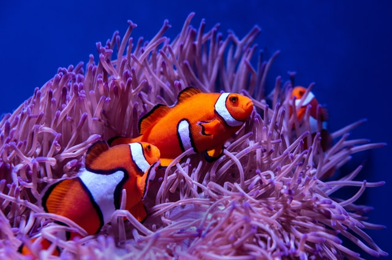

Fish are aquatic, cold-blooded vertebrates with fins, gills, and scales that live in water.
They breathe by absorbing oxygen from the water with their gills, move with fins, and most have a
skeleton of bone or cartilage. Some fish are exceptions to these
general rules, such as warm-blooded species, fish without scales, or those that can also breathe air.


What makes them special?
Fish are special due to their unique physical adaptations for aquatic life, such as fins for movement
and gills for breathing underwater. They also possess complex behaviors, high nutritional value as a
food source, and incredible diversity in species, size, and habitat.